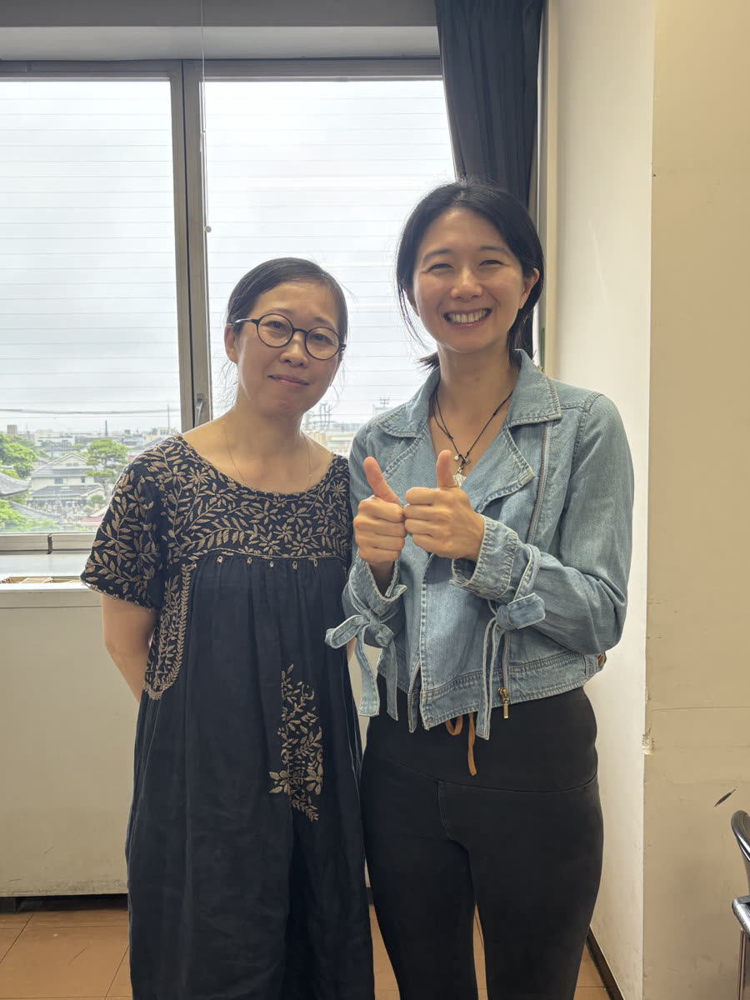

來到日本以後，那天是我第一次，在這片土地上參加一場關於自然生產的分享。
2026 年 6 月 7 日，鎌倉。講題是「命のめざめ」——生命的甦醒，副標是「お産は『自分に還る』旅」，生產是一趟回到自己的旅程。
坐在台下，看著大前輩，我有一種在異鄉終於遇見同路人的激動。

左為三浦順子老師，右為我
她走過的路，比我想的遠
順子不是一開始就走這條路的。
她先在倫敦的電視製作公司工作，之後有將近十年的時間，為 FIGARO、Vogue、anan 等時尚雜誌擔任統籌、撰稿人與攝影師。
然後她去了尼泊爾，在那裡遇見一位真正的瑜伽行者，接觸到傳統瑜伽——她自己的說法是，那讓她的人生「大きく転換」，大幅轉了向。
我第一次讀到這段的時候，愣了一下。
因為它解釋了一件我原本沒想通的事：為什麼她會用影像和照片，持續記錄生命誕生的那一刻。
那不是後來才學的技能。那是她原本就有的眼睛。
三浦－マイナリ順子｜簡歷
導樂訓練——Michel Odent 醫師（水中生產先驅）與 Lilliana Lomas
Sadhana Bhumi Himalaya For Life Research
那份師承名單，如果妳熟悉溫柔生產的譜系，會知道它有多硬——
Janet Balaskas 是主動生產運動的創始人，Michel Odent 是水中生產的先驅。他們兩位都是這個領域的源頭級人物。順子甚至親自訪問過 Janet 本人。
三句我捨不得忘的話
一｜催產素，是一種害羞的荷爾蒙
「オキシトシンは、シャイホルモン。」
催產素，是一種害羞的荷爾蒙。
—— 三浦順子
催產素是讓子宮收縮、讓愛流動的荷爾蒙。可是它很害羞——當一個女人覺得自己被觀看、被打擾、被催促，它就悄悄退場了。
所以順子說，陪產最重要的，常常不是「做什麼」，而是「不要做什麼」：守護那個場域，讓她不孤單，卻也不被打擾。
這句話我後來一直在用。它一句話講透了「守護場域」的生理依據——而且比任何說教都好懂。
二｜あるがまま，不等於 わがまま
「あるがまま ≠ わがまま」
順其自然，不是任性。
—— 三浦順子
這一句是這場演講裡最有骨的地方，而且我認為華語孕產圈很需要它。
順其自然不是拒絕知道，也不是放任。是先把全部弄清楚——所有的選項、所有的風險——再自己決定，並且承接那個決定的結果。
真正的主體性建立在充分的資訊上，不是建立在拒絕資訊上。
我在這條路上看過太多把「自然」當成護身符的說法。順子這句話，是溫柔的，但它劃了一條線。
三｜委ねる（完全交付）
順子用瑜伽的語言說：生產的時候，我們會在「自我」和「真我」之間。
自我會計畫、會控制、會說「我一定要⋯⋯」；而真我，和更大的生命相連。她說那是一種「委ねる」——完全交付。
聽到這裡我忽然懂了——
這不就是我們阿公阿嬤常說的那句：
盡人事，聽天命嗎？
—— 我在台下的那一刻
我們把能準備的都準備好，然後，把剩下的，溫柔地交出去。
她那天講的：Active Birth 主動生產
這場演講的主體，是 Active Birth（主動生產）——Janet Balaskas 在 1970 到 80 年代的倫敦推動的概念。
它的核心其實很單純：生產時，女性不是被動地「被接生」，而是主動的——可以自由移動、選擇姿勢，順著身體的引導把孩子帶到世上（日本稱「フリースタイル」）。
Janet 說過一句話：「My body must know what to do.（我的身體，一定知道該怎麼做。）」
它有三個支柱：
直立——站、蹲、坐，而不是躺。順著重力，而不是對抗它。
安心、不被打擾，催產素才會流動。回到那個害羞的荷爾蒙。
姿勢、節奏、要不要移動，由媽媽自己決定。
順子也提到，躺著生產是相當晚近的習慣。人類更長的歷史裡，女人是站著、蹲著、坐著，順著重力生的。她甚至舉了日本平安、鎌倉時代的繪卷為例——那上面的女人，是坐著生的，身邊圍著支持她的女性。
她說：Doula 不是一個新職業，是一個「本來就在那裡」的角色。
Active Birth 的核心原則——產程中自由活動與直立姿勢——有兩篇 Cochrane 系統綜述支持，合計 57 個隨機試驗、超過 14,000 名女性：第一產程平均縮短約 1 小時 22 分，剖腹產與硬脊膜外麻醉需求都降低。
但也要誠實說出反面：第二產程採直立姿勢與產後出血超過 500 毫升增加約 48% 相關，這個發現的證據品質同樣是中等。
我把完整的整理放在〈多元生產方式：12 種選擇的簡單介紹〉裡。
那天最讓我意外的一段
我以為這會是一場「自然生產有多好」的演講。
結果順子放了一段溫柔剖腹的影片。
步調很慢、很輕柔：延遲斷臍、寶寶出生後立刻和媽媽肌膚相親五十分鐘、爸爸剪臍帶、導樂在場。
她說：「真希望讓日本所有的醫生看看——原來醫生可以這麼溫柔地接住寶寶。」
原來連剖腹，都可以這麼溫柔。
原來，一切的事情，我們都可以帶著更溫柔的方式去面對。
那一刻我確定了她不是一個「反對派」。她推的不是某一種生產方式，她推的是溫柔本身可以延伸到每一件事——包括那些看起來最不溫柔的地方。
我為什麼想寫她
那天讓我最有感觸的，其實不是講稿本身。
是中場我聽著在場的助產師們跟順子老師的對話——她們聊到醫療界的不通融、聊到限制。聽著聽著，我心裡不禁感到唏噓。
自然生產這麼美，女人身體裡的力量這麼大——為什麼我們反而要把它複雜化？
在現在的制度裡，好像一定要去醫院、醫生一定要介入點什麼，才叫安全。順子說，很多醫護其實是因為從來沒看過真正不被打擾的生產，才會覺得它危險。
這不是誰的錯。是我們集體把它忘記了。
但我也想誠實地說：我說的「不介入」，是指在低風險、有專業陪伴的前提下，把空間還給身體；不是叫人拒絕醫療。相信身體，和保留醫療作為安全網，這兩件事可以同時成立。
順子讓我最感動的，正是這份平衡。
還有一件事，是我自己的。
順子是旅外的日本人陪產員——在倫敦，為日語族群做醫療現場的語言與文化橋樑。而我在台灣與日本兩地陪產。
那天在台下，別人聽到的是「Active Birth 是什麼」；我聽到的是——Janet Balaskas、Michel Odent、Ina May Gaskin、還有我自己學過的那些，原來匯流成同一條河。
核心都是同一件事：以女性為主體、相信身體、守護而非介入。
謝謝順子老師。在異鄉，讓我又一次相信了這條路。🌿
怎麼找到她
如果妳讀得懂日文或英文，她的內容非常值得追。
我的老師們
這是一個系列。走在這條路上，我受過很多人的影響——有些是老師，有些是同路人。我想把她們一個一個寫下來，因為她們給我的東西，不該只留在我這裡。
陸續增加中。
常見問題
三浦順子是誰？
三浦－マイナリ順子（Junko Miura-Mainali），旅居倫敦的日本人瑜伽講師與陪產員（Doula）。依她本人的簡歷：瑜伽修習 25 年、導樂資歷 17 年，是英國 Doula UK 第一位日本籍導樂，陪伴超過 300 場生產，並在倫敦私立產科醫院 Portland Hospital 教授瑜伽超過 15 年。她師承主動生產（Active Birth）創始人 Janet Balaskas 與水中生產先驅 Michel Odent 醫師。
「催產素是害羞的荷爾蒙」是什麼意思？
這是三浦順子用來解釋「為什麼生產需要不被打擾」的比喻。催產素是讓子宮收縮、讓愛流動的荷爾蒙，但當一個女人覺得自己被觀看、被打擾、被催促時，它就會悄悄退場。所以陪產最重要的常常不是「做什麼」，而是「不要做什麼」——守護那個場域，讓她不孤單，卻也不被打擾。
あるがまま 和 わがまま 有什麼不同？
這是三浦順子在講座中提出的區分。あるがまま（順其自然）不等於 わがまま（任性）。順其自然不是拒絕知道、也不是放任，而是先把所有選項與風險都弄清楚，再自己決定、並承接那個決定的結果。真正的主體性建立在充分的資訊上，不是建立在拒絕資訊上。
Active Birth 主動生產是什麼？
由 Janet Balaskas 在 1970–80 年代的倫敦推動的概念，核心是：生產時女性不是被動地被接生，而是主動的——可以自由移動、選擇姿勢，順著身體的引導把孩子帶到世上（日本稱「フリースタイル」）。它有三個支柱：重力（直立而非躺著）、荷爾蒙（安心不被打擾，催產素才會流動），以及由媽媽自己選擇。它的核心原則有 Cochrane 系統綜述支持，詳見〈多元生產方式〉。
台灣有類似的陪伴嗎？
有。我在台灣與日本兩地提供產前、產中、產後的全程陪伴。如果妳想知道台灣目前有哪些助產所與友善溫柔生產的院所，可以看〈台灣溫柔生產資源地圖〉。想找人一起把選項攤開來看，看溫柔生產陪產服務，或直接跟我聊聊。
資料來源。本文關於三浦順子的資歷，依據她本人提供的簡歷（2026 年 8 月）、matriyoga.com 自介、Doula UK 個人頁，以及 2026 年 6 月 7 日鎌倉「命のめざめ」講座的現場記錄。
關於數字。陪產場次與年資會隨時間累積，本文採用她 2026 年 8 月簡歷的版本；早期資料中曾出現不同數字，屬於同一份資歷在不同時間點的紀錄。「在倫敦支援日本人水中生產實績最多」為她本人的自述，我未另行查證。
引述說明。文中順子的話語，出自 2026 年 6 月 7 日講座的現場記錄與逐字整理，中譯由我完成。若與她本人的正式表述有出入，以她的表述為準。
本文為個人側寫與聽講反思，不構成醫療建議。文中提及的生產方式各有適應條件與風險，請與妳的醫師、助產師直接討論。